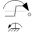

RegularizationEnumeration defining the regularization around zero |
Enumeration Literals (4)
| Exp |
Exponential regularization (smooth) |
|---|---|
| Sine |
Sinusoidal regularization (smooth 1st derivative) |
| Linear |
Linear regularization |
| Cosine |
Cosine regularization |
Used in Components (3)
|  |
Modelica.Mechanics.Rotational.Sources Constant torque changing sign with speed |
|
Modelica.Mechanics.Translational.Components Resistance of a rolling wheel |
|
|
Modelica.Mechanics.Translational.Sources Constant force changing sign with speed |